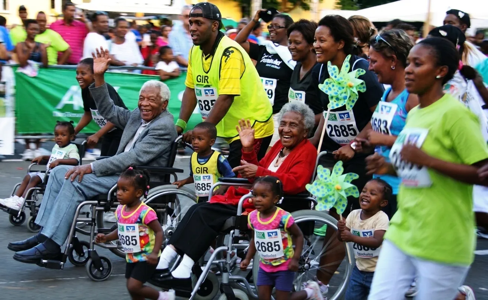

We have all been there. It is early morning, and the alarm is ringing. You look at the snooze button and ask yourself, "Can I sleep a little longer?" Sometimes, even when we love running, our training can feel boring. We run for fitness and for personal bests, but it can start to feel like it is only about us.
This is why running for a cause can change everything.
When you pin on your race number for a mission and not only for yourself, running feels different. Here are six reasons why running for a cause is one of the most rewarding things you can do.
1. Your Runs Feel More Meaningful
We run for many reasons: to stay fit, to clear our minds, to win a medal, or to spend time with friends. When you add a cause, your training gets a new purpose. You know that your effort can help other people. Now, an ordinary training run becomes a gift to someone else.
2. You Help Raise Awareness
When you run for a cause, you learn about problems that many people face. You also help your friends, family, and community to see these problems. Many people around the world are struggling, but few people know about it, and help is often limited. When you share your training updates and talk about your cause, you become a voice for change. You start conversations that teach others, remove shame, and bring more support.
3. You See Life From a New Angle
It is easy to focus only on our own stress, tiredness, or slow progress. We forget to think about what other people are going through. Some people live with long-term illness, war, or money problems. When you think about their challenges, you feel more grateful for what you have. Your thinking changes from "I have to run" to "I get to run." You also feel more thankful for your health and your ability to move.
4. You Have More Motivation to Train
Let's be honest: some mornings, we find many excuses not to run. But when you train for a cause, you have a strong reason to get up. You know that your kilometers matter to someone else. This feeling can push you out of the door, even when the weather is bad or your legs are tired.
5. You Stay Fit and Consistent
Running for a cause keeps you responsible. You follow your training plan because you do not want to let anyone down. This helps you turn your goals into action. Each training run takes you one step closer to race day and to a successful fundraiser.
6. You Build a Strong Support Network
Running can feel lonely sometimes, but running for a cause brings people together. You may run with your running club, your co-workers, or other runners in your area. You share energy and encouragement, and you celebrate together at the finish line. You will remember that you are never running alone.
Ready to Make Your Kilometers Count?
Not every run has to change the world. But joining a charity run is a great way to bring back your passion, meet new people, and help others with every step.
Which cause is close to your heart? Are you ready to turn your everyday kilometers into real impact? Find a charity run near you, register, and start your journey today.